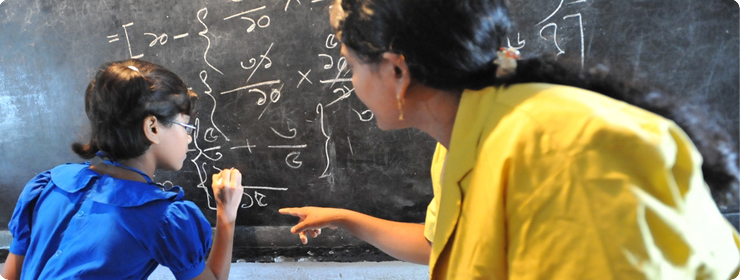
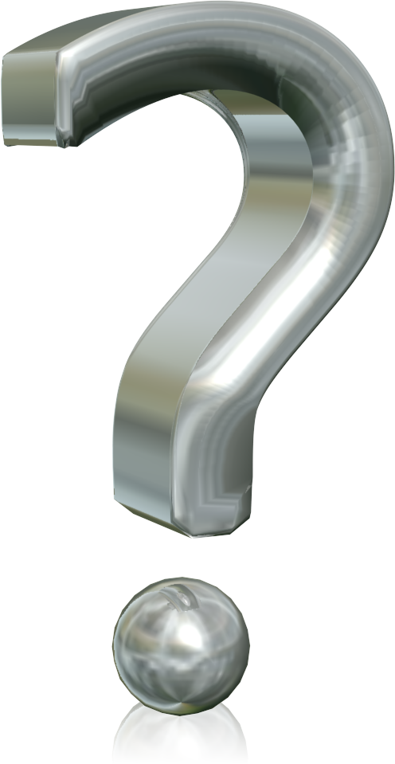
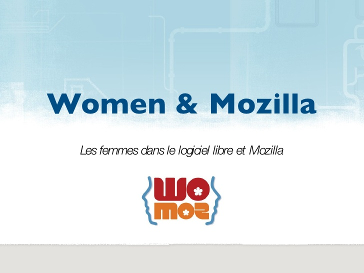
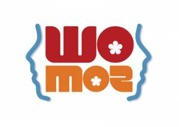
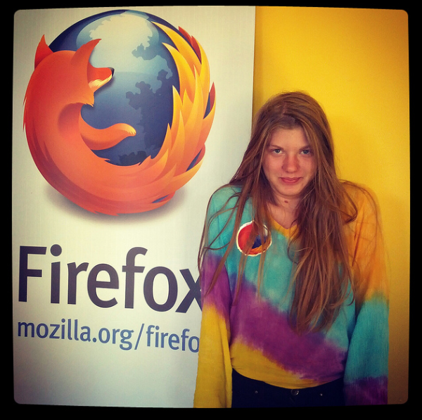
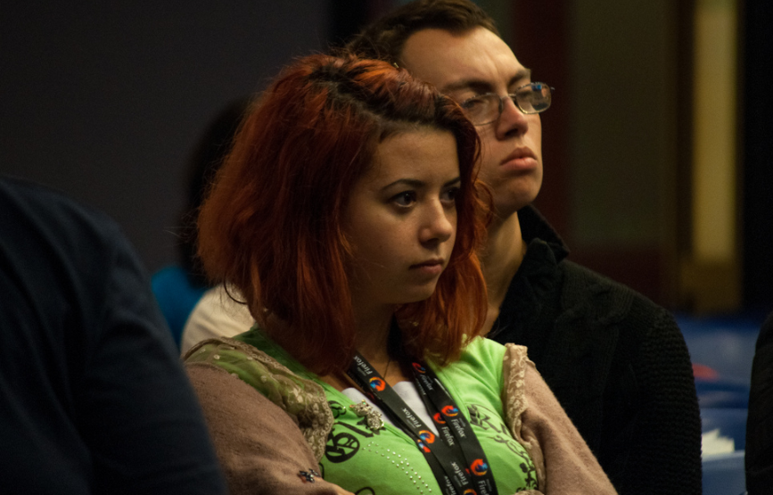

Women & Mozilla
Les femmes dans le logiciel libre et Mozilla
Crée par Hammami Olfa
Au niveau d'éducation
Les femmes obtiennent, en général, de meilleures notes que les hommes
Dans le domaine de l'IT

Un niveau un peu bas !!
- Le dernier souci d'un grand nombre de femmes , c'est d'avoir un ordinateur ! = pas d'accès aux ordinateurs
. - Les femmes étudient rarement l'informatique , elles sont beaucoup légèrement intéressées par ce domaine
. - le monde du libre est presque ignoré par les femmes
Donc, Les solutions ??
Les femmes doivent mieux s'enfoncer dans le domaine de l'informatique et surtout le monde du libre!
Logiciel Libre
Dans les communautés Open Source
Women & MOzillien "Womoz"

womoz s'intéresse à encourager et aider les femmes pour mieux s'intégrer dans ces domaines
Womoz

rénunie toutes les femmes du monde pour un seul but: apprendre, avancer..
Women around the world !!



Nos activités:
- Formations
- Evènements:
- open world forum(2010)
- workshops(PyStar Paris )
- WoMoz Kick-off event in the Philippines ( 25mai)
Comment Contribuer ?
Y en a le choix divers!
Contribuer dans Womoz
- localisation
- Design
- Documentation
- Marketing...
Pas assez de connaissance en informatique ?
- Coordrination des évènements
- Documentaion..
Qu'est ce qui a ammené les femmes impliquées
- être sociable
- si vous voulez que les femmes viennent, leur faire sentir qu'on attend
- améliorer leurs connaissances
- T-shirt...,